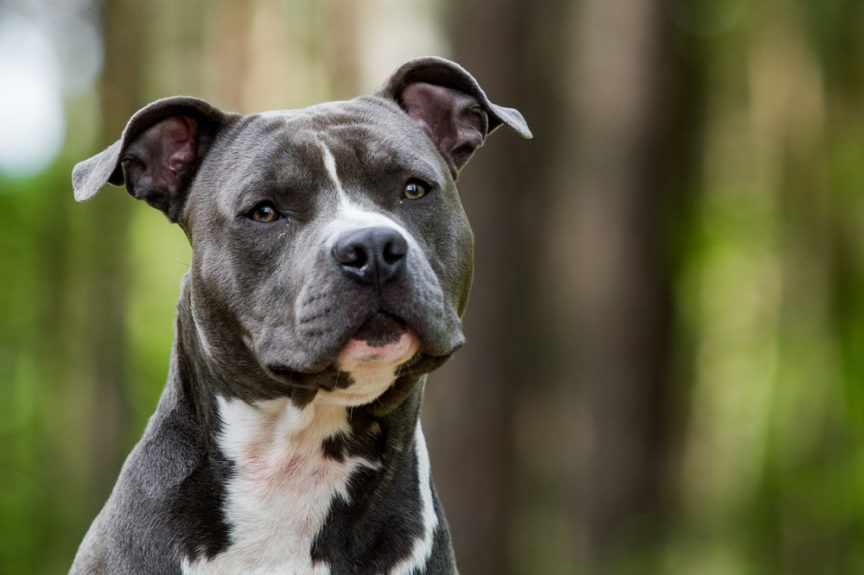

10. Golden Retriever. to chyba psy rasowe najbardziej znane i popularne z ras, nadających się dla dzieci. Całkowicie pozbawione agresji, doskonałe do układania i pojętne, do tego pracowite. Nie są dobrymi stróżami, bowiem z radością witają nie tylko domowników, ale i gości, nawet jeżeli widzą ich po raz pierwszy. Kochają wodę i pływanie, niezależnie od pory roku.
9. Buldog francuski. Podobnie jak golden, jest doskonałym towarzyszem dzieci i uwielbia się z nimi bawić. Chętnie wykonuje polecenia, a za smakołyk zrobi wszystko. Lubi być głaskany i chwalony, jest pieszczochem, nie wolno od niego egzekwować niczego siłą lub krzykiem. W sezonie 2019 najmodniejsze psy w Polsce.
8. Sznaucer miniaturowy. Jest to psiak pełen temperamentu, nadaje się na towarzysza starszych dzieci. Niegdyś był naszą specjalnością hodowlaną – to właśnie w Polsce przyszedł na świat pierwszy na świecie miot sznaucerów miniaturowych białych, następnie uznanych przez FCI za odrębną rasę.
7. Husky syberyjski. Te najbardziej znane psy zaprzęgowe najlepiej się czują w towarzystwie człowieka, nie znoszą samotności. Husky nie będzie zatem dobrym wyborem dla kogoś, kto mieszka sam, a do tego pracuje od rana do wieczora.
6. American staffordshire terier. Jedna z czterech ras terierów typu bull, uznanych przez FCI. Powszechnie nazywany amstaffem. Silny, atletycznej budowy, mocny pies, przeznaczony dla doświadczonego opiekuna. Jest psem inteligentnym i przywiązanym do swoich domowników, ale wymaga umiejętnego prowadzenia, gdyż może stać się nieobliczalny. Wraz z bulterierem są to tzw. rasy psów agresywnych, a niektórzy uważają je nawet za rasy psów niebezpiecznych.
5. West highland white terier. Popularne “westie” to małe, białe pieski, chętnie kupowane do towarzystwa dla całych rodzin, doskonale się w tym sprawdzają. Mają, jak to teriery, spory temperament i kochają zabawę, stąd ich zamiłowanie do mini agility, gdzie odnoszą sukcesy w zawodach.
4. Berneński pies pasterski. Berneńczyk to wspaniała, rodzinna rasa, doskonały stróż, choć ma bardzo łagodne usposobienie. Duży, masywny, bardzo kochający domowników, przepada za dziećmi. Niestety, rasa ta ma predyspozycje do chorób (zwłaszcza nowotworowych), dlatego berneńczyki żyją krótko – maksymalnie 9-10 lat.

3. Yorkshire terier. Mimo „maskotkowatego” wyglądu jest to z krwi i kości terier, zadziorny, czupurny, odważny i pełen energii. Jest pieszczochem i uparciuchem. Uwaga: york nie ma włosów zamiast sierści! Każdy pies ma sierść, tylko niektóre rasy są pozbawione podszerstka, mają jedynie włos okrywowy. Ale nie są to włosy jak u człowieka.

2. Labrador retriever. Choć apogeum jego popularności – jak się wydaje – mamy już za sobą, to wciąż labradory są modne i chętnie kupowane. Do niedawna były to najmodniejsze psy i na wystawy zgłaszano ich nawet ponad setkę. Labrador łatwo się szkoli, jest pojętny, dzięki czemu jest to najczęściej wybierana rasa psa do pracy, zwłaszcza jako przewodnik niewidomych, a także poszukiwacz narkotyków. Kocha wodę i jest doskonałym towarzyszem myśliwego.

1. Owczarek niemiecki. Są to najbardziej znane psy na świecie, zawsze modne i chętnie kupowane. Popularny „onek” jest symbolem psiego oddania i wierności, ale rasa ta z pewnością jest najbardziej wszechstronna użytkowo. Owczarki pracują w wojsku, policji, są doskonałymi ratownikami i tropicielami, pracują też jako psy obronne przewodnicy niewidomych. Bardzo łatwe do ułożenia.